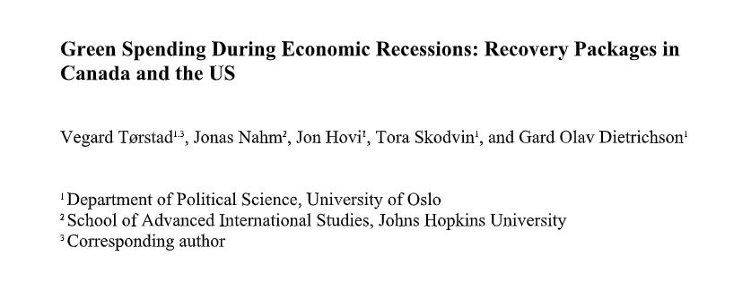

Åttende Faglige Seminar
Gard Olav Dietrichson
24-10-2022
Plan for i dag
- Gjennomgå oppgaven
- Tilbakemelding
- Løsningsforslag
- Litt nærmere om intervju typer
- Åpen spørretid
- Pause
- Gruppeaktivitet
Litt info
- Den lengre kvalifiseringsoppgaven har nå blitt lagt ut
- Leveringsfrist er likt de andre oppgavene, to virkedager før
seminaret i uke 46
- Fristen er da mellom 10. og 16. November for alle gruppene
- Beskrivelse av oppgaven ligger ute på Canvas
Temaet for i dag er Intervjuer
- Hovedtypen “kvalitative” forsknignsmetode som læres her
- Er delvis en praktisk metode, men gir også føringer på analysen
- Kan brukes både i deduktiv og induktiv forskning
- Men formen for denne intervju kan være avhengig av hva man vil med
opplegget
Kvalifiseringsoppgaven
Denne oppgaven handler intervju som datainnsamlingsmetode. Tenk deg
at du skal studere norske interesseorganisasjoners (fagforeninger,
næringsorganisasjoner, miljøorganisasjoner etc.) involvering i
stortingsvalget 2021. Problemstillingen er i hvilken grad
organisasjonene tok del i valgkampen og forsøkte å påvirke valget. Dere
bestemmer dere for å intervjue relevante personer i et utvalg
organisasjoner. Målet er å kunne sammenligne ulike organisasjoners svar
etterpå, men også å få kunnskap om hva de enkelte organisasjonene har
foretatt seg i noe detalj.
Kvalifiseringsoppgaven
Hvilken intervjutype (strukturert, semi-strukturert, ustrukturert)
vil du si er best egnet for dette formålet? Og hvordan ville du teknisk
sett gjennomført intervjuet? Begrunn svarene dine kort. Lag til slutt et
forslag til åpningsspørsmål.
Bonus diskusjon
- Noen spesielle hensyn dere ville gjort med tanke på utvalg?
- Hvem kan være nyttig å snakke med, mer spesifikt?
Generell tilbakemelding
- Hva var bra?
- Nesten alle gjorde veldige gode besvarelser
- Hva var dårlig?
- Det som manglet var å svare på alle tre deler av spørsmålet
- Og diskutere rundt alle aspektene
Generell tilbakemelding
- Hva kunne vært enda bedre?
- Ut over det nevnt i forrige bilde, ikke mye…
- Noen kunne hatt bedre åpningsspørsmål, og reflektert litt bedre
rundt sitt valg av spørsmål
- Men det er ikke noe som er lett å lære bort
Løsningsforslag
- Oppgaven leder tydelig an til at man skal snakke om
semi-strukturerte
- Både sammenliknbart og belysende om den unike enheten
- Vi ønsker nettopp denne formen
- Gullstandarden for gjennomføring av et intervju er
ansikt-til-ansikt
- Åpningsspørsmålet er litt opp til dere
- Et forslag: “Hvor lenge har du jobbet i organisasjon X”
- “Hva er dine ansvarsområder innenfor organisasjon X”
- Det viktigste er også å reflektere rundt valgene, hvorfor dette, og
hvorfor ikke dette andre
Litt nærmere om Intervjuer
- Ukas oppgave har tre punkter som det kan være verdt å snakke litt
nærmere om
- Hva slags intervju?
- Hvordan gjennomføre det?
- Hvordan åpne det?
Hva slags intervju
- Som oppgaven sier har vi tre typer intervjuer vi forholder oss til
- Alle har sin plass i forskning
- Strukturerte passer godt til statistisk forskning
- Anvendes ofte som store datasett
- Eksempel: ESS, WVS, Asian Barometer Survey
- Kan lettere anvendes på mange enheter
- Ustrukturerte er ofte en essensiell del av feltarbeid
- Ofte nyttig for teorigenerering
- Man går gjerne inn med veldig store spørsmål
Hva slags intervju
- Semi-strukturerte er gode for å sammenlikne på lavt antall enheter
- Gir mye av fordelene til strukturert
- Men ikke like lett å oppskalere
Hvordan gjennomføre intervjuet
- Ansikt-til-ansikt er det mest ønskelige
- Lettere å bygge “rapport”
- Lettere å lese kroppspråk
- Gir generelt bedre grunnlag for samhandling med intervjuobjekt
- Andre alternativer kan være
- Over zoom, nest-best løsning?
- Skriftlig: Enquette/e-post
- Telefon: Bedre, men fortsatt manglende
Hvordan gjennomføre intervjuet
- Fokusgrupper er også en mulighet
- Eller gruppeintervjuer generelt
Åpningsspørsmål
- Introduksjon av intervjuet og etablere relasjon
- Oppvarmingsdel: “ice-breaker” (lett spørsmål) <- Vi er her
- Hoveddel med ulike typer spørsmål
- Nedtrappingsedel (“cool-off”)
- Avslutning (mulighet for tillegg, takk)
Åpningsspørsmål
- Bør være lett å svare på
- Men bør også være relatert til det intervjuet handler om
Eksempel: Intervjuer om krisepakker i USA og Canada
- I lys av et forskningsprosjekt som jeg har jobbet for, gjennomførte
vi noen intervjuer

Eksempel: Åpningsspørsmål
“For the Record: Could you please briefly state your professional
role and tell us about your background with Canadian climate and
environmental politics?”
Eksempel: Åpningsspørsmål
- Spørsmålet er lett, og gir objektet sjansen til å snakke om seg selv
og sine erfaringer
Eksempel: Faglig spørsmål
- In the wake of the COVID-19 economic downturn (Dec 2020), the
Canadian government launched the so-called Net Zero Accelerator – a
strategic innovation fund. Could you tell us a bit about the background
and aims of this initiative?
- Do you know which actors that proposed the establishment of the Net
Zero Accelerator?
- Who benefits from this fund?
Eksempel: Faglig spørsmål
- Spør tydelig om noe konkret, men ber også om vurderinger fra
intervjuobjektet
- Gir mulighet til å snakke på egenhånd
Oppfølgingsspørsmål
- Fordelen med semi-strukturert er også at det blir mulig å stille
oppfølgningsspørsmål
- Det var også relevant i dette intervjuet
Til sutt, litt om GDPR
- Dette reglementet (til noens irritasjon) har endret mye i henhold
til forskning
- Forskningsetikk messig er det veldig viktig å få både eksplisitt og
informert samtykke
- Dette gir også føring på hvordan all data som lages skal lagres og
hvem den kan deles med
- Veldig viktig at dere ikke deler noen av “funnene” fra
datainnsamlingen med meg
Til slutt,
- Er det noen flere spørsmål til ukas oppgave/tematikk?
Åpen spørretid
- Noe dere har møtt på den siste uken som dere lurer på?
Gruppediskusjon
La oss si du/dere skal intervjue enkeltpersoner om deres erfaring med
å være medlem av en høyreekstrem politisk organisasjon, og nærmere
bestemt om hvor aktive de er og hvordan de oppfatter at sin lokale
avdeling fungerer i ulike henseende. Dette kan være et sensitivt tema å
snakke med utenforstående om. Hva ville du/dere gjort for å få
intervjupersonene til å føle seg komfortable? Forsøk å skrive et par
spørsmål som kan starte intervjuet og sørge for at isen brytes.
Neste kvalifiseringsoppgave
Hva skiller deltakende observasjon fra andre datainnsamlingsmetoder
(som survey, intervjuer og fokusgrupper)?
Hva slags type
forskningsspørsmål kan deltakende observasjon brukes til å belyse? Kan
denne datainnsamlingsmetoden brukes til å teste teori/hypoteser? Begrunn
svaret ditt kort.
Til Neste Gang!
- Lever i tide!
- Ta med godt humør!!
- Takk for i dag!!!